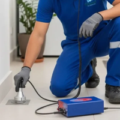
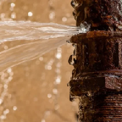
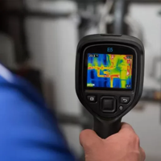

Localização de vazamentos sem danificar o imóvel
Utilizamos tecnologia avançada para encontrar vazamentos sem causar danos ao imóvel, disponibilizamos laudo técnico em que ao ser apresentado na empresa de abastecimento de água, ele atua como comprovante da localização do vazamento.

Conserto de Vazamentos hidráulicos
Realizamos o conserto de vazamentos hidráulicos em residências, comércios e indústrias, garantindo a integridade do sistema hidráulico e evitando desperdício de água.

Detecção de infiltrações
Detectamos infiltrações em paredes, tetos e pisos, utilizando equipamentos de alta precisão para identificar a origem do problema e propor soluções eficazes.